Appendices
A. Google Ventilation Maze¶
Previously, we found two ventilation maps during Challenge 4. By using these maps, we can navigate within the building's vents in order to access the Santa's Secret Room without hacking the badge scanner in Challenge 6. We can access the vents through the grate next to Google's booth in the entrance-way on the first floor.
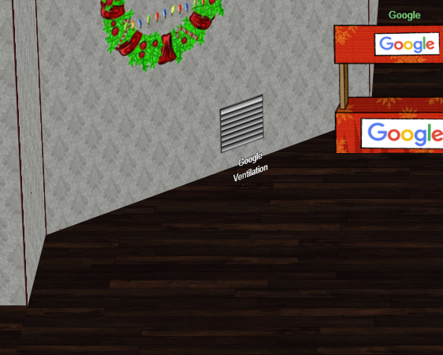
After clicking on the vent, we are greeted with an instructional screen and a 3D-maze.
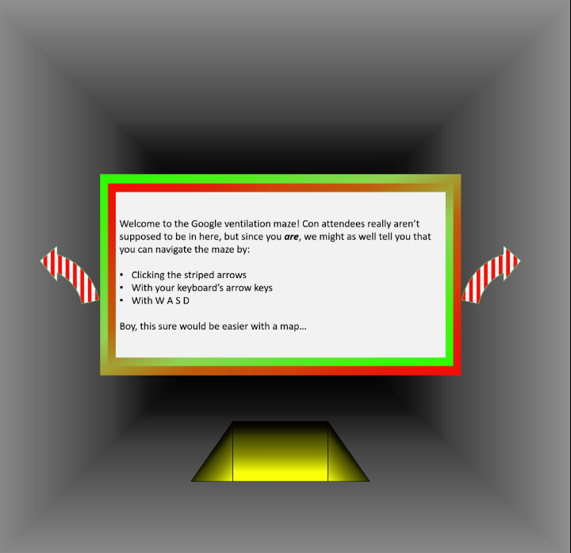
By using these maps, we can navigate our way through both floors in order to reach Santa's Secret Room.


Despite having a map, it becomes very easy to lose our heading and our current location. However, we can use Chrome's DevTools to see both of these in order to ensure we don't get lost. Each movement sends a POST request to https://vents.kringlecastle.com/move, which replies back with several files that the client browser uses to draw the current location and heading. By examining the response file named move, we can find our heading, X and Y location, and current floor as values in the file.
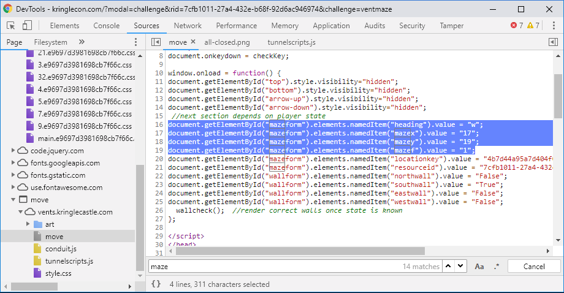
Starting from the bottom right of the first floor, the proper route of each floor is:
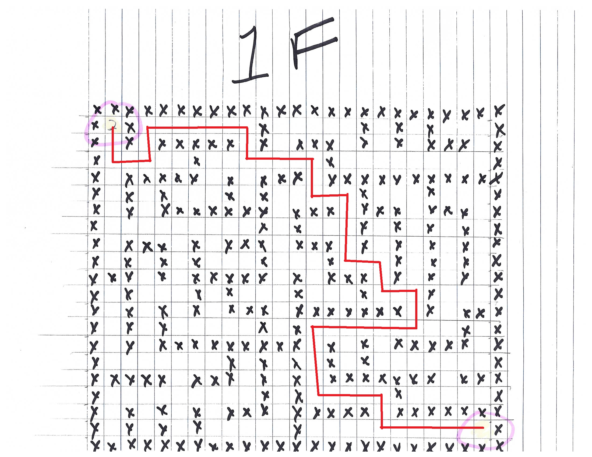
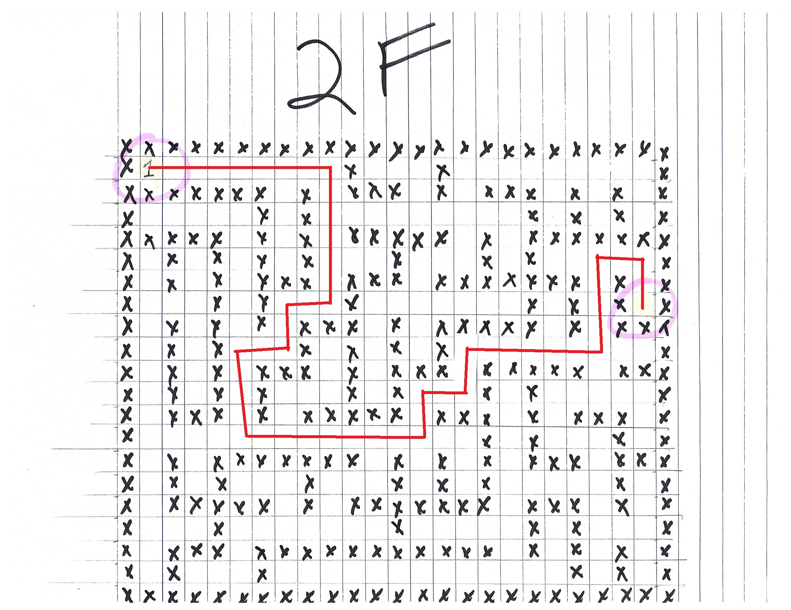
B. Wannacookie Malware Analysis¶
Wannacookie is a highly-targeted form of ransomware aimed at two specific targets: Computers on the KRINGLECASTLE domain, and .elfdb files. This makes the malware fairly harmless to any other system. However, it uses a novel form of command and control (CnC) to transfer binary data through domain name system (DNS) requests, which still makes this an interesting piece of malware to analyze.
Provided is a high-level walkthrough of Wannacookie's infection and destruction process. The detailed analysis follows this chart.
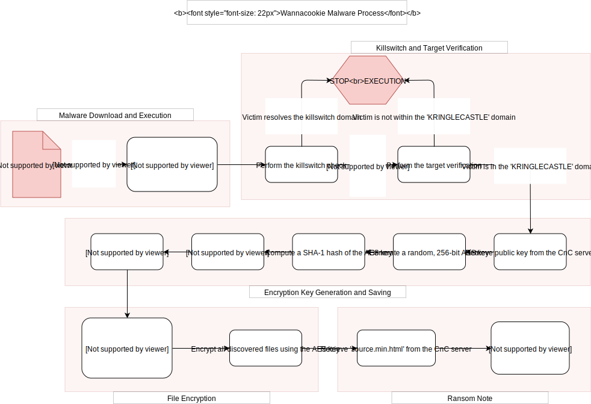
To fully analyze the behavior of Wannacookie, we first spin up a Windows 10 virtual machine to see the execution of the malware in a controlled environment. We will run the PowerShell script directly, rather than from the CHOCOLATE_CHIP_COOKIE_RECIPE.docm file since this VM doesn't have access to Microsoft Word.
There are several factors to Wannacookie that makes it relatively safe to analyze:
- It does not seek out other computers to infect, so it's not virulent.
- It only targets files with the
.elfdbextension, which is designed solely for the purpose of the SANS Holiday Hack Challenge 2018 and not used for real-world data.
Our first attempt to run Wannacookie fails since we are not on a KRINGLECASTLE domain. In order to allow us to see its full execution, we remove the safety switch.
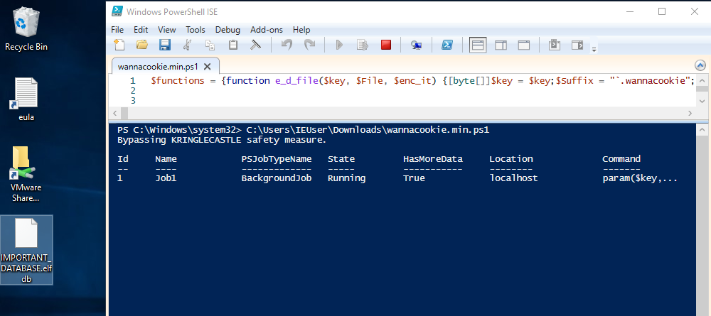
During the malware's execution, it retrieves data over the DNS in a novel way. It first makes a request to the DNS CnC server with a hex-encoded string as the subdomain. If it's requesting a file, then the server responds with a length value within the TXT record. Due to the limitations of DNS records, the server can only reply with 254-char, or 127-byte, chunks. Thus, the malware uses the initial length value to know how many requests it needs to make to retrieve the full file. After retrieving the length value, the malware makes several DNS requests, in sequence, with the format of: <chunk_number>.<requested_file>.erohetfanu.com. The chunk_number increments from 0 to one less than the specified length from before. For each request, the server replies with a portion of the file as a hex string within the TXT record. Upon completing all DNS requests, the malware has downloaded the full file from the CnC server.
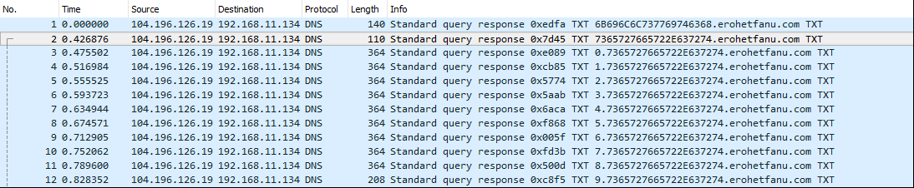
The script takes the following actions:
-
Performs the killswitch check. The malware generates a domain to lookup through several novel techniques that attempt to obfuscate its methods and the resulting domain name.
- It first retreives a hex string from the TXT record of
6B696C6C737769746368.erohetfanu.com(the hex subdomain translating tokillswitch), which is an encrypted value that contains the killswitch domain name:66667272727869657268667865666B73 - Another variable,
$S1, contains a hex string of gzip data that the malware translates all the way to the hex-values of its unzipped contents; an XOR key for the previous value:1f0f0202171d020c0b09075604070a0a - Finally, the script performs an XOR operation between the two values to decrypt the domain name used as a killswitch:
yippeekiyaa.aaay - The script attempts to resolve this domain name and if successful, halts further operation.
- It first retreives a hex string from the TXT record of
-
Checks if the target is within the
KRINGLECASTLEdomain and has TCP port 8080 open on localhost. If either of these are not true, then the script exits. -
Retrieves the CnC server's public key via DNS. This request is formatted as:
7365727665722E637274.erohetfanu.com. The subdomain is hex, which translates toserver.crt. The server replys in the TXT record with how many subsequent requests the script should make.
-
Generates a random, 256-bit encryption key along with a SHA1 hash of a hex version of that key.
-
Encrypts the key with the server's public key and sends it to the CnC server over DNS. After asymmetric encryption, the key ends up being 2048-bits long. After the first submission, the CnC server sends back a random, 20-byte ID number for that key, known by the program as a "Cookie ID".
- Based upon limits of DNS requests, the script breaks up the encrypted key into 128-bit (32 char) chunks and sends each chunk sequentially.
- The DNS requests are formatted like:
- First chunk as
chunk.6B6579666F72626F746964.erohetfanu.com. Where the hex translates tokeyforbotid. In return, the server provides the 20-byte "Cookie ID" within the TXT record. - All subsequent chunks as
cookie_id.chunk.6B6579666F72626F746964.erohetfanu.com. The server replys with a blank TXT record for these requests.
- First chunk as
-
Afterwards, it creates a timestamp of the current time in order to serve a deadline for the victim with the ransom note.
-
It then gathers a list of files with the
.elfdbfile extension within the Desktop, Documents, Videos, Pictures, and Music folders for that user, additionally ignoring files with.wannacookieas an extension. -
Using that file list, the script encrypts each file using the generated key in AES CBC mode, while also generating the IV for that file.
- The IV's length is stored within the first four bytes (a 32-bit integer) of the encrypted file, with the actual IV following it, in order to allow the script to later decrypt it with only the key.
-
After completing the encryption process, it retrieves an HTML file from the CnC server via DNS and starts a local HTTP server on port 8080. This server provides the ransom note to the victim and instructions on how to pay and decrypt their files.
We notice the file's execution taking an exceptionally long amount of time, this is due to the malware downloading source.min.html over DNS from erohetfanu.com, and then having to translate it to ASCII. After completing the decoding process, the script starts an HTTP server on port 8080.
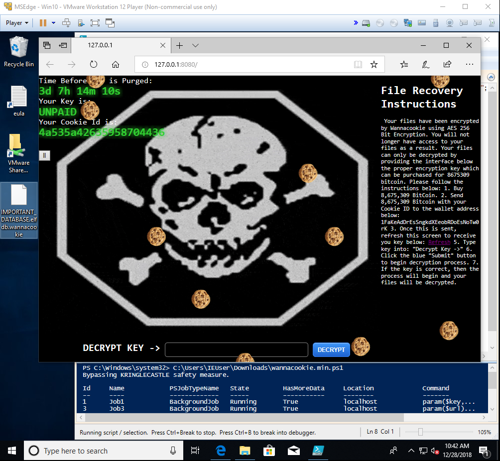
The ransom note application checks for payment upon every refresh via the cookie_is_paid resource. This causes the application to send a DNS request to the CnC server in the format of cookie_id.72616e736f6d697370616964.erohetfanu.com. The CnC server replies with a hex string in the TXT record that translates to False. By analyzing the script, we see that the server would reply with a 32 character hex-string if it believes its been paid, which is most likely the encryption key.
The decrypt function uses the previously calculated SHA-1 hash to check if the victim enters the correct key. If it validates the key, then it gathers all .wannacookie files and performs the decryption process. Since we recorded the network traffic during the exploitation process and have the server's private key in hand, we can simply decrypt the submitted key and perform the decryption process, without checking for payment with the CnC server.
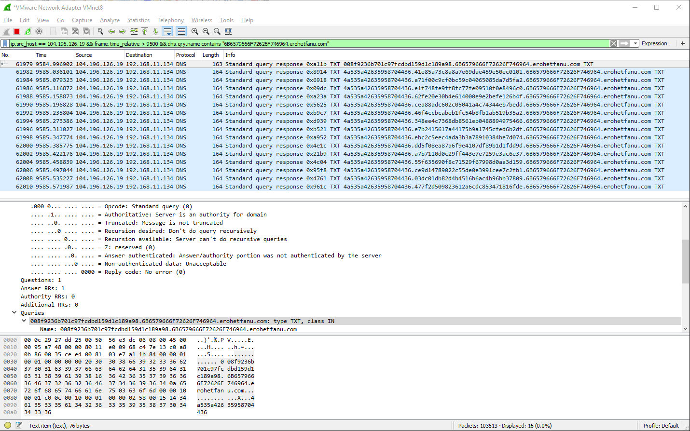
bernard@Bernard-PC:~/NetsecStudy/sans2018$ cat VM_encrypted_key.txt
008f9236b701c97fcdbd159d1c189a9841e85a73c8a8a7e69dae459e50ec0101a71
f00c9cf0bc59c04065085da7d5fa2e1f748fe9ff8fc77fe09510f0e8496c062fe20
e30b4e614000e9e2befe126b4fcea88adc602c05041a4c74344eb7bedd46f4ccbca
beb1fc54b8fb1ab519b35a2348ee4c7368db8561eb0488894975466e7b2415617a4
4175b9a1745cfed6b2dfebc2c5eec4ada3b3a78910384be7d074dd5f08ea87a6f9e
4107df89b1d1fdd9da7b7110d0c29ff443e7e7259e3ac6e3755f635690f8c71529f
67998d0aa3d159ce9d14789022c55de0e3991cee7c2fb103dc01db82d4b4516b6ac
4b96bb37809477f2d509823612a6cdc853471816fde
bernard@Bernard-PC:~/NetsecStudy/sans2018$ cat VM_encrypted_key.txt | xxd -r -p > VM_encrypted_key.key
bernard@Bernard-PC:~/NetsecStudy/sans2018$ openssl rsautl -decrypt -oaep -in VM_encrypted_key.key -out VM_key.key -inkey server.key
bernard@Bernard-PC:~/NetsecStudy/sans2018$ ls -lah VM_key.key
-rwxrwxrwx 1 bernard bernard 16 Dec 28 15:42 VM_key.key
bernard@Bernard-PC:~/NetsecStudy/sans2018$ xxd -p VM_key.key
c5a6236a762ecfbf935b428d43eae4c7
Now, by submitting c5a6236a762ecfbf935b428d43eae4c7 as the decrypt key into the Wannacookie application, we can initiate the decryption process and recover our file.
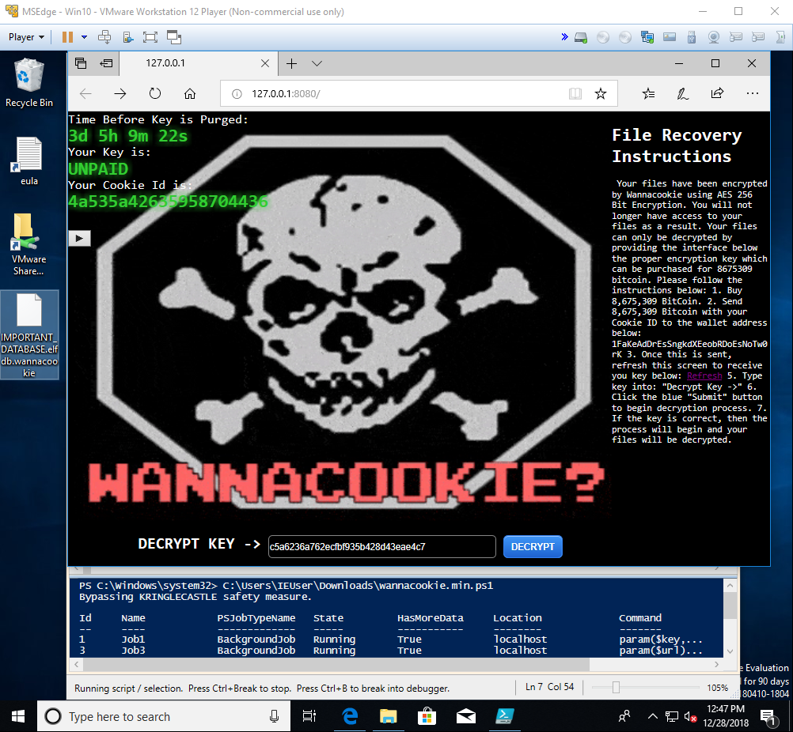
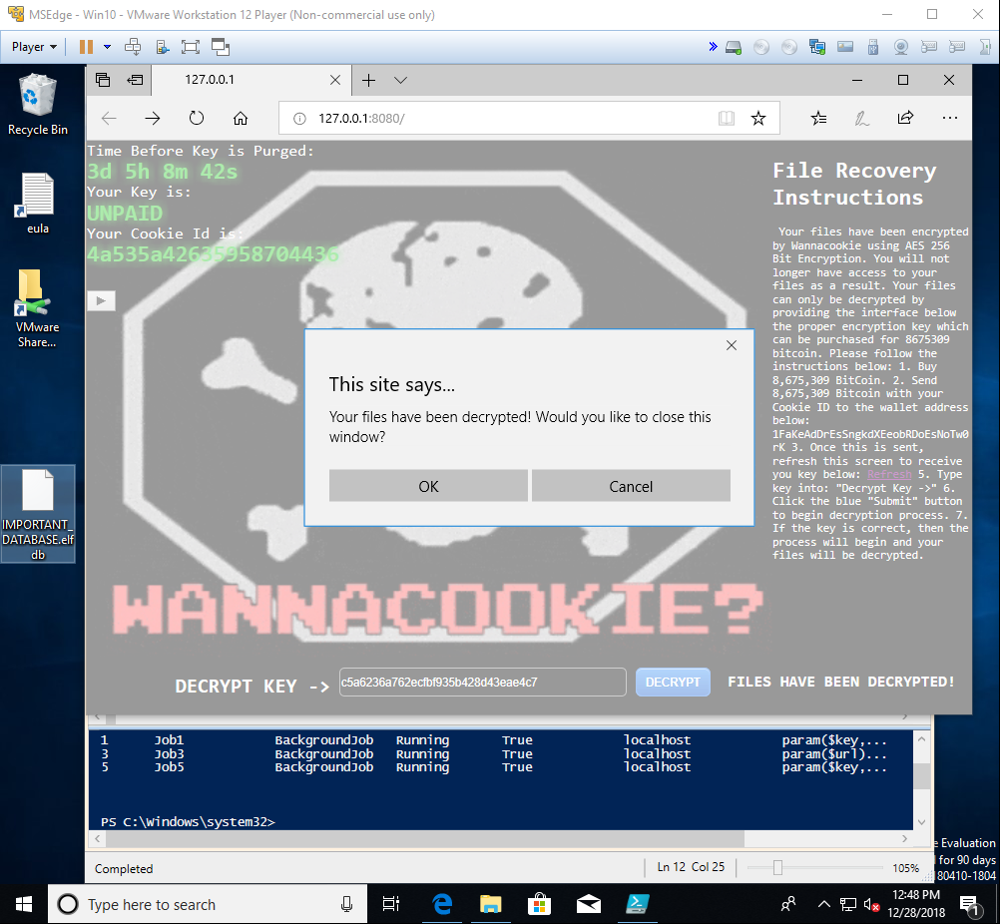
After completing the decryption process, the script ends and shuts down the HTTP server.